Configurações Adicionais
Jenkins
Configurando maven
Precisamos apontar o maven para a i instância do nexus, como o modelo do arquivo settings.xml,
não se esqueça de trocar os valores personalizados da sua instalação
#Configurando settings.xml do maven
cd /var/lib/jenkins
su jenkins
mkdir .m2
cd .m2
vim settings.xml
#cole o conteúdo do link acima settings.xml substituindo os valores
#salve o arquivo
Instalando Plugins adicionais no Jenkins
Precisamos instalar alguns plugins e configurar algumas variáveis no jenkins
Acesse o Jenkins no menu
 Marque o plugin para instalação
Clique no botão Instalar sem reinicar
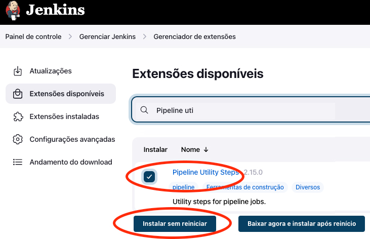
Apos a instalação Marque a opção abaixo
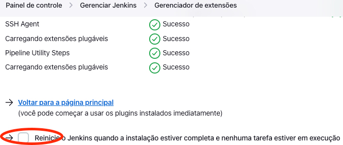
Aguarde o reinicio.
Marque o plugin para instalação
Clique no botão Instalar sem reinicar
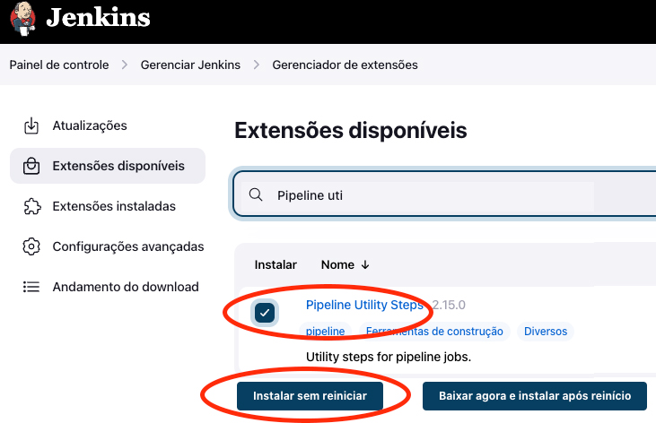
Apos a instalação Marque a opção abaixo
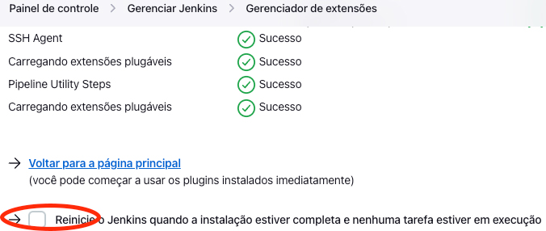
Aguarde o reinicio.
Marque o plugin para instalação
Clique no botão Instalar sem reinicar
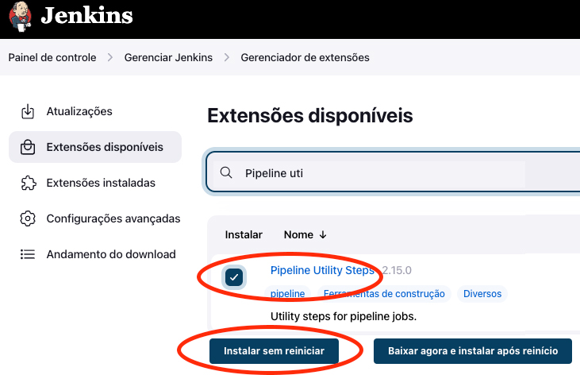
Apos a instalação Marque a opção abaixo
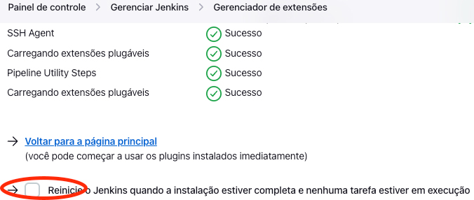
Aguarde o reinicio.
Configurações adicionais no Jenkins
Novamente no ar acesse o menu:
Clique em
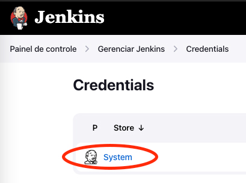
Clique em:
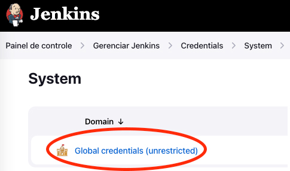
Clique no Botão: Add Credential
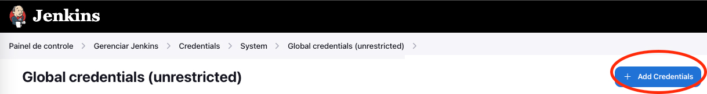
Escolha a opção na lista
Prencha conforme abaixo e depois no campo Key clique em
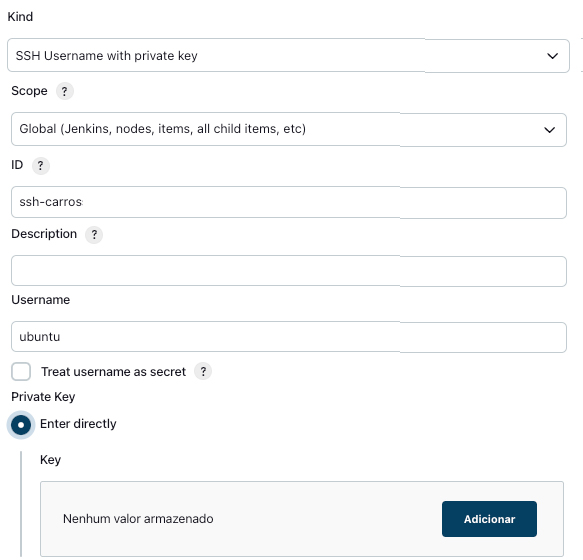
Abra o arquivo previamente salvo carros-api.pem e cole o conteúdo no campo
 Finalize mais abaixo clicando no botão: Create
Finalize mais abaixo clicando no botão: Create
Adicionando variáveis Globais no Jenkins
Precisamos adcionar as variáveis globais abaixo clicando no botao: Adicionar uma a uma.
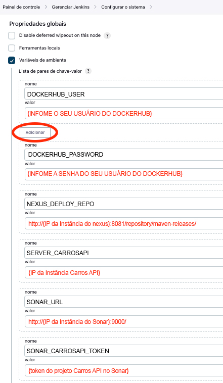
Por aqui finalizamos as configurações do ambiente adicionais, agora vamos criar o projeto de build de fato.
Criando a tarefa de build do projeto Carros API
No menu inicial do jenkins cliquem em + Novo tarefa
Informe o nome do item, clique em
Depois clique em Tudo Certo
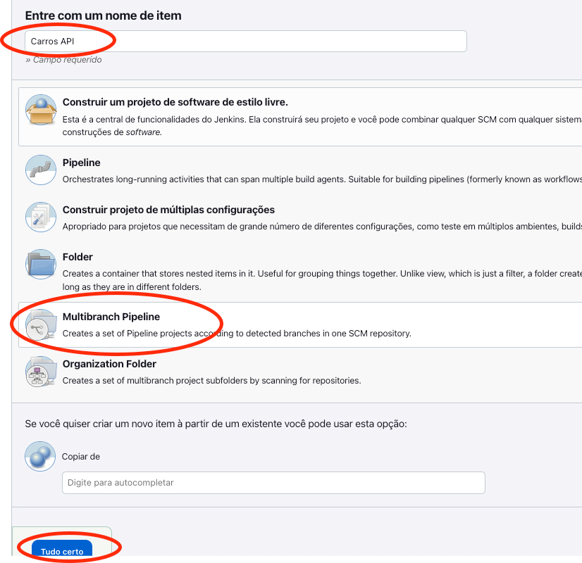
Vamos informar os dados da Tarefa, começe informando o como:
Então vamos configurar o jenkins para acessar o repostório Github do projeto clique em: Add Source
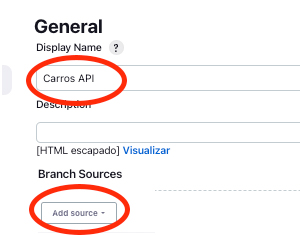
No menu escolha
 Agora precisamos persistir sua credencial do Github, clique em: Add
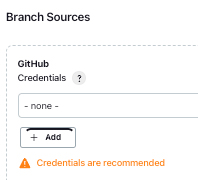
Preencha os campos conforme a imagem abaixo depois clique em Add
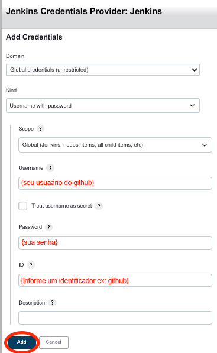
Voltando a tela da criação da tarefa selecione a credencial salva como na imagem abaixo
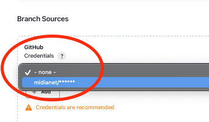
Para finalizar configuração do repositório informe a url do Github do projeto e cique em: Validadte para verificar se esta tudo certo com a configuração
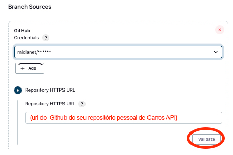
Agora vamos configurar o intervalo que o Jenkins detecta alterações no projeto, vamos usar: apenas para o exercício, mas esse tempo em projetos reais devem ser melhor avaliado.
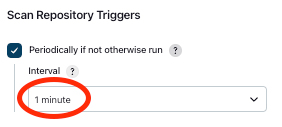
Chegamos ao final da configuração mais abaixo clique no botão: Salvar e vamos aguardar a configuração inicial do projeto
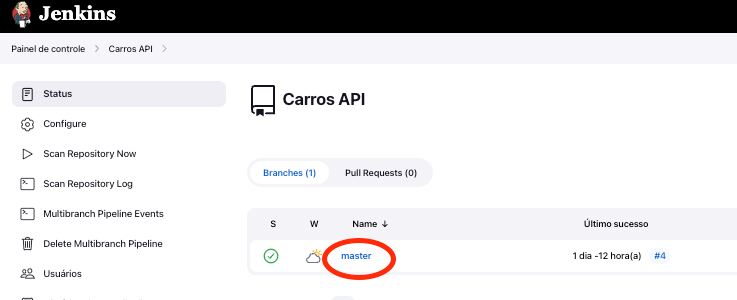
Clique sobre a branch:
Então se tudo estiver certo veremos uma tela como essa:
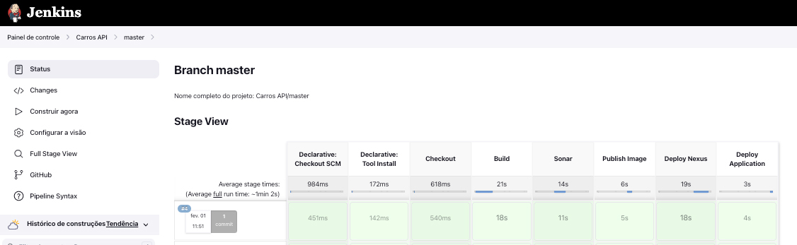
Agora precisamos persistir sua credencial do Github, clique em: Add
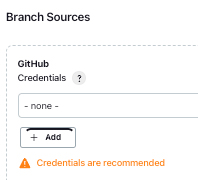
Preencha os campos conforme a imagem abaixo depois clique em Add
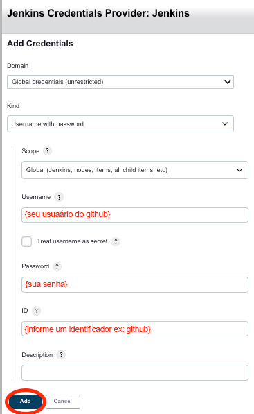
Voltando a tela da criação da tarefa selecione a credencial salva como na imagem abaixo
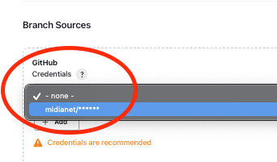
Para finalizar configuração do repositório informe a url do Github do projeto e cique em: Validadte para verificar se esta tudo certo com a configuração
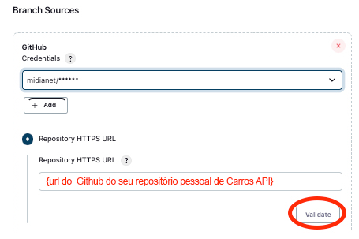
Agora vamos configurar o intervalo que o Jenkins detecta alterações no projeto, vamos usar: apenas para o exercício, mas esse tempo em projetos reais devem ser melhor avaliado.
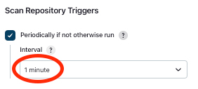
Chegamos ao final da configuração mais abaixo clique no botão: Salvar e vamos aguardar a configuração inicial do projeto
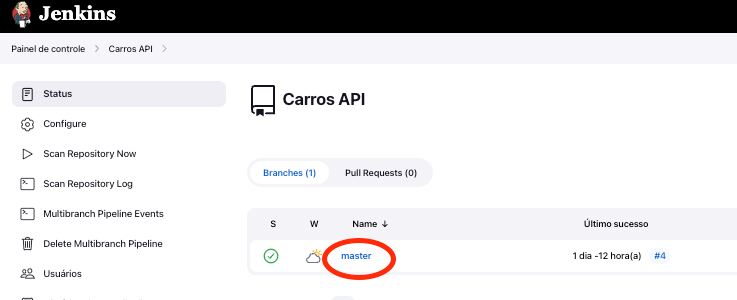
Clique sobre a branch:
Então se tudo estiver certo veremos uma tela como essa:
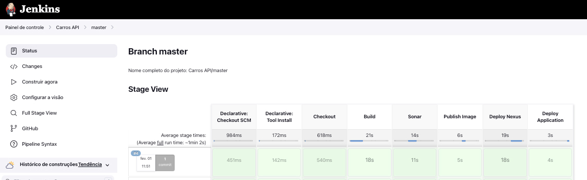
Agora precisamos persistir sua credencial do Github, clique em: Add
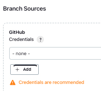
Preencha os campos conforme a imagem abaixo depois clique em Add
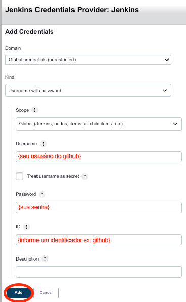
Voltando a tela da criação da tarefa selecione a credencial salva como na imagem abaixo
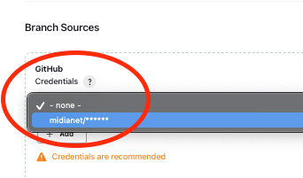
Para finalizar configuração do repositório informe a url do Github do projeto e cique em: Validadte para verificar se esta tudo certo com a configuração
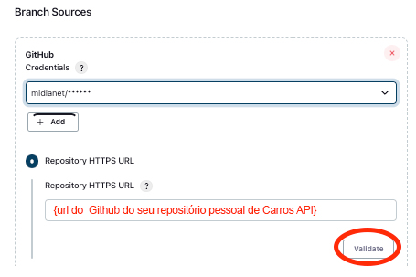
Agora vamos configurar o intervalo que o Jenkins detecta alterações no projeto, vamos usar: apenas para o exercício, mas esse tempo em projetos reais devem ser melhor avaliado.
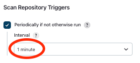
Chegamos ao final da configuração mais abaixo clique no botão: Salvar e vamos aguardar a configuração inicial do projeto
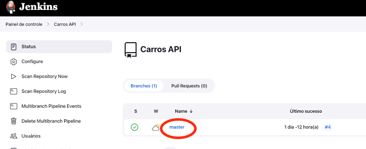
Clique sobre a branch:
Então se tudo estiver certo veremos uma tela como essa:
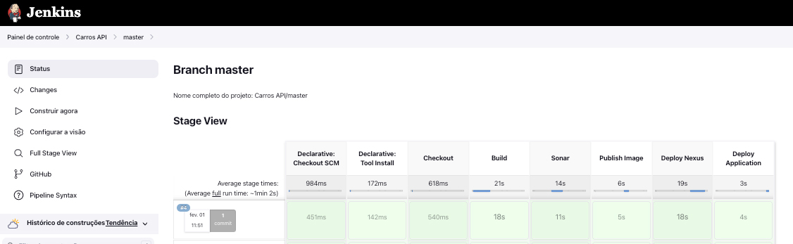
Checando as eviências no Nexus
Acessse o Nexus no endereço para verificar o deploy do pacote do projeto acesse no menu:
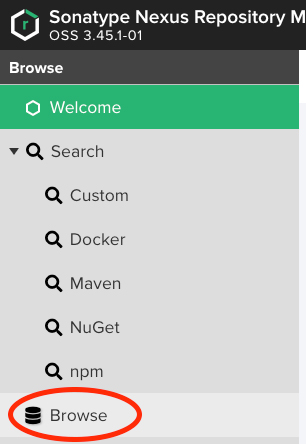
Então selecione o repositoório
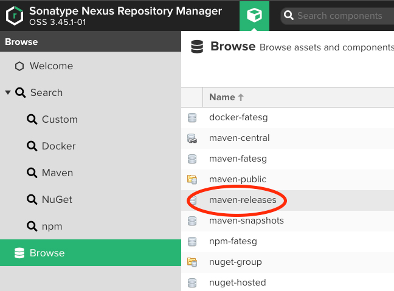
Vemos aqui os artefatos deployados em release e seu projeto deverá estar aqui e iterado a cada versão nova.
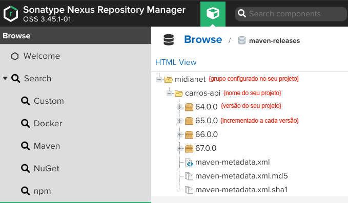
Checando as eviências no Dockerhub
Também versionamos a imagem Docker do projeto iterado a cada versão nova.
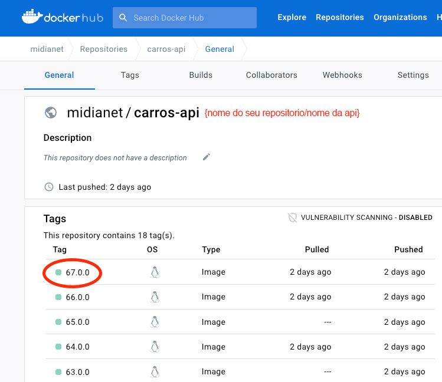
Checando as eviências da aplicação de fato
Acesse o endereço , devemos ver algo como a imagem abaixo.
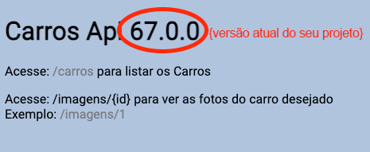
Itere a versão no github, commite novamente e aguarde o processo todo ocorrer e cheque novamente as evidências observando a nova versão.
Finish
Se tudo deu certo parabéns você alcançou seu Objetivo
Agora você tem todas as competências para Aplicar Agilidade na sua Infraestrutura